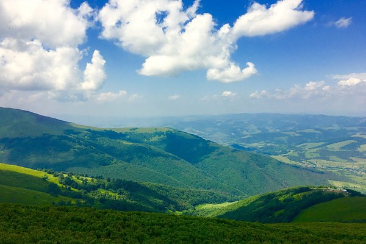
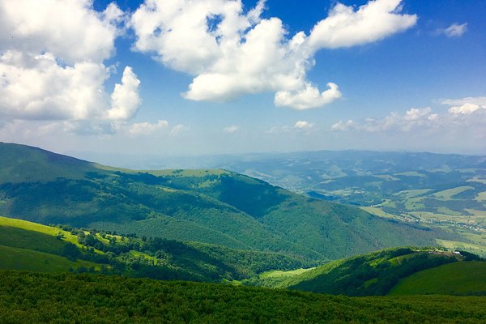

Why Pylypets?
A charming village in the heart of the Carpathians.
Nestled in the picturesque Carpathian Mountains of Ukraine, Pylypets is a hidden gem that offers breathtaking landscapes, rich cultural heritage, and a plethora of outdoor activities. Whether you're an adventure seeker looking to explore hiking trails and ski slopes, or a culture enthusiast eager to experience traditional Ukrainian village life, Pylypets has something for everyone. Discover the beauty of nature, indulge in local cuisine, and immerse yourself in the warm hospitality of the locals. Your unforgettable journey to Pylypets awaits!
Attractions
Explore the top attractions in and around Pylypets.
Shypit Waterfall
A stunning waterfall located just a short hike from Pylypets, Shypit is a must-visit natural attraction. The cascading waters create a picturesque scene, perfect for photography and nature lovers.
Address:
Shypit Waterfall, Zakarpattia Oblast, Ukraine
What people like about it
Visitors appreciate the serene atmosphere, the beauty of the waterfall, and the opportunity to connect with nature.
Learn More
Vita Lake
Vita Lake is a serene and picturesque lake located near Pylypets. Surrounded by lush greenery and rolling hills, it offers a peaceful retreat for visitors looking to relax and enjoy nature. The lake is perfect for picnics, fishing, and leisurely walks along its shores.
Address:
Vita Lake, 343-a Nyzhniy Studenyy, Zakarpattia Oblast, Ukraine
What people like about it
Visitors love the tranquil environment, beautiful scenery, and opportunities for outdoor activities such as fishing and picnicking.
Learn MoreKelychyn Ecopark
Kelychyn Ecopark is a beautiful natural reserve located near Pylypets. It offers visitors the chance to explore diverse flora and fauna, hike through scenic trails, and enjoy the tranquility of the Carpathian wilderness.
Address:
Kelychyn Ecopark, 249 Kelychyn, Zakarpattia Oblast, Ukraine
What people like about it
Visitors appreciate the rich biodiversity, well-maintained trails, and the opportunity to experience the natural beauty of the Carpathians.
Learn MoreGallery
Photos and Videos from Pylypets
 
